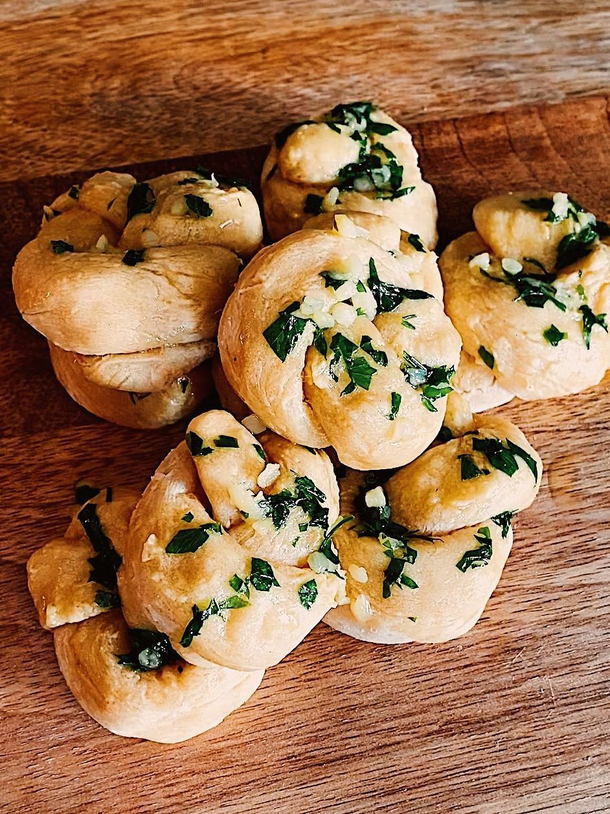

Tofu Garlic Knots

Description
These vegan tofu garlic knots contain a lot more protein than your everage knot. The same dough can be used to make pizzas, flatbreads, or pretzels. The possibilities are endless!
If you'd like to make this dough in advance, it can be stored in the fridge for 2-3 days wrapped tightly in plastic wrap.
Ingredients
- 14 oz. soft tofu
- 3 cups all-purpose flour
- 1 1/2 tsp red wine vinegar
- 2 tsp baking powder
- 2 tsp salt
- Egg wash
- 3 cloves garlic
- 1/4 cup minced parsley
- 2 tbsp butter
Steps
- Preheat oven to 350F.
- Blend together tofu and vinegar in blender.
- In a separate bowl, whisk together flour, baking powder, and salt.
- Mix in tofu mixture until rough dough forms.
- Flip dough onto a floured surface and knead for 5-10 minutes.
- Cut into 16 equal pieces.
- Roll pieces out into long strips and fold into knot shapes.
- Brush the knots with egg wash and bake at 350F for 22-25 minutes.
- While knots are cooking, melt butter in a small saucepan, add garlic, and cook until slightly golden.
- Turn off heat and add parsley.
- Brush garlic butter onto knots when they are out of the oven.
Recipe by Justine Snacks